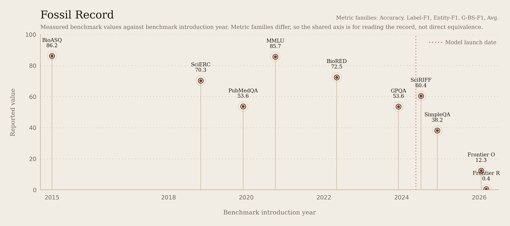

12.3 / 0.4
Olympiad acc. / Research acc.

Model fossil
12.3 / 0.4
Olympiad acc. / Research acc.
02
53.6%
GPQA (science)
03
53.65%
Label-F1, PubMedQA-labeled
04
86.19%
Label-F1, Task-B yes/no
05
72.45%
Entity-F1, BioRED NER slice
06
70.35%
G-BS-F1, plotted on a percent scale
07
85.7%
MMLU
08
38.2%
Correct
09
60.4
Avg., SciRIFF-Eval
Fossils-M
The full specimen cards sit below the model sheet. Open any fossil to see what the benchmark is about, which capability slice it probes, and the exact paper that introduced it. For a benchmark-first reading of GPQA across the OpenAI GPT family, open Fossils-B.
* general-purpose ** science-native
General-purpose fossils stay in the record as contrast baselines for separating broad model strength from science-specific skill.